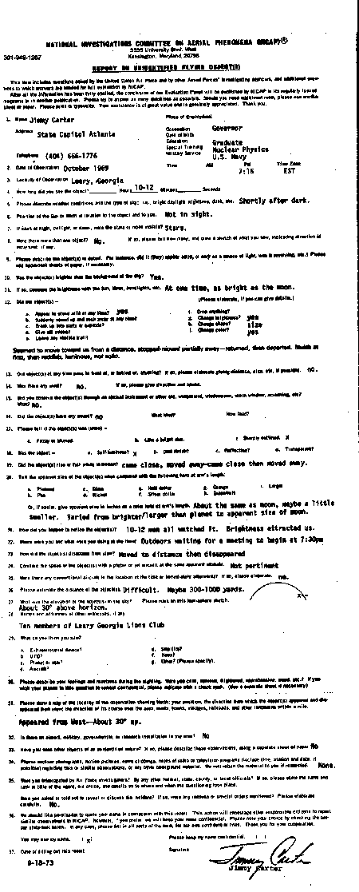

This form includes questions asked by the United States Air Force and by other Armed Forces* investigating agencies,
and additional questions to which answers are needed for full evaluation by NICAP.
After all the information has been fully studied, the conclusion of our Evaluation Panel will be published by NICAP in its regularly issued magazine or in another publication. Please try to answer
as
many questions as possible. Should you need additional room, please use another sheet of paper. Please print or
typewrite. Your assistance is of great value and is genuinely appreciated. Thank you.
Le formulaire d'origine

Name Jimmy Carter Address State Capitol Atlanta Telephone (404) 656-1776
Occupation Governor Date of birth Education Special Training Graduate Nuclear
Physics Military Service U.S. Navy Time AM PM 7:15 Time Zone EST
How long did you see the object? _____ Hours __10-12__ Minutes ______ Seconds
Please describe weather conditions and the type of sky; i.e., bright daylight, nighttime, dusk, etc. Shortly
after dark.
Position of the Sun or Moon in relation to the object and to you Not in sight.
If seen at night, twilight, or dawn, were the stars or moon visible? Stars.
Il y avait-il plus d'un objet ? Non. I
Le ou les objets étaient-ils plus lumineux que le ciel lui-même ? Oui.
Si oui, comparez la luminosité à celle du Soleil, de la Lune, de phares, etc. A un moment, aussi brillant
que la Lune.
Le ou les objets
étaient-ils présents à tout moment ? Oui.
changeaient-ils de luminosité ? Oui.
Le ou les objets passèrent-ils à un moment devant ou derrière quelque chose ? Si oui, indiquez-en
la distance, la taille, etc, si possible : Non.
Avez-vous observé le ou les objets au travers d'un instrument optique, pare-brise, fenêtre,
écran, etc. ? Lequel ? Non.
Le ou les objets avaient-ils un contour précis ? Oui.
Le ou les objets possédaient-ils une lumière propre ? Oui.
changeaient-ils de forme ? Taille.
changeaient-ils de couleur ? Oui.
Le ou les objets effectuaient-ils un mouvement d'ascension ou de chute ? Il s'approcha, s'éloigna, se
rapprocha et s'éloigna encore.
Il y avait-il du vent ? Non.
Donnez sa taille apparente sur un décimètre tendu à bout de bras : Environ la même que celle de la Lune,
peut-être un peu plus petit.
Comment en êtes-vous venu à observer le ou les objets ? Une douzaine d'hommes l'observaient. La lumière
avait attiré notre attention.
Où étiez-vous et que faisiez-vous à ce moment ? Nous attendions devant les portes d'une salle où devait se
tenir un meeting à 19 h 30.
Comment le ou les objets disparurent-ils ? Il s'éloigna jusqu'à disparaître.
Estimez la distance du ou des objets ? Difficile. Entre 300 m et 1 km.
Quelle était l'altitude du ou des objets dans le ciel ? Environ 30 degrés au-dessus de l'horizon.
Noms et adresses des autres témoins, s'il y en avait : Dix membres du Lions Club de Leary en Géorgie.
Dessinez une carte du lieu de l'observation indiquant le nord ; votre position ; la direction où le ou les
objets apparurent et disparurent ; la direction de son mouvement dans la zone ; les routes, villes, villages,
voies de chemins de fer, et autres signalements dans 2 km. Apparu à l'ouest à environ 30 degrés en
hauteur.
Existe-t-il un aéroport, ou des installations militaires, gouvernementales, ou de recherche dans la zone ? Non.